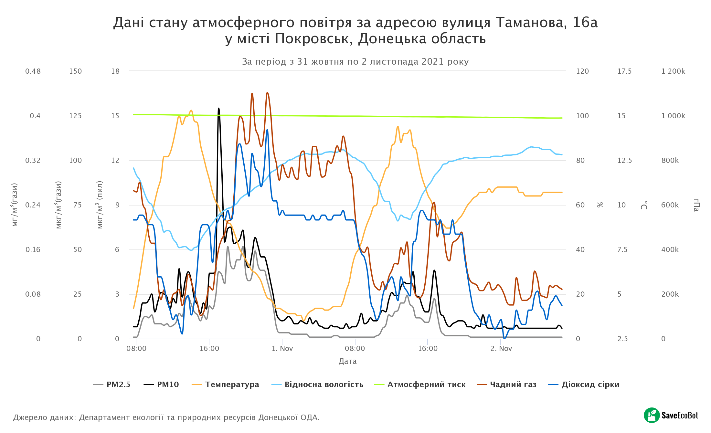

Місто Мирноград утворилося з двох населених пунктів - Новоекономічне та Гродівське.
З 1911 р. було розроблено шахти № 1, 2, 3, 4, що призвело до створення одного з найбільших центрів видобутку вугілля на Донбасі - шахти «Новоекономічний» (сьогодні це шахта "Центральна").
Після цього зум на 14 масштабВ 1965 году началось строительство крупнейшей в Донецкой области шахты «Красноармейская-Капитальная». Это событие стало ключевым в идее объединения городов Новоэкономического и Димитрова. Детальніше про історію міста читайте на порталі https://dimitrov-rada.gov.ua/city/history.html
Межі населеного пункту - 2міста Мирноград
Межі Мирноградської територіальної громади
Розділ про людей: населення, статево-вікова структура тощо
Зараз населення Мирнограду (за даними на 2020 рік) становить 47 460 осіб
Населення міста повільно зменшується (-0,77% зміни населення)
53% населення міста – жінки, а 47% – чоловіки
27% населення міста становить 60+ років
Найнижчий відсоток населення у віковій групі 20-24 роки (4% населення)
Найбільші роботодавці міста наведені в таблиці нижче.
| Enterprise | Type of activity (main) | Number of employees |
|---|---|---|
| Separate subsection(SS) "Mine 5/6" | Coal mining | 1039 |
| SS "Tsentral’na Mine" | Coal mining | 745 |
| SS “Kapital’na Mine” | Coal mining | 3544 |
| SS “Avtomobilist” | Transportation | 194 |
| SS “VVTZ” | Communication services | 65 |
| DVUVKG PbUE “Company “Voda Donbasu” | Water intake, purification and supply | 186 |
| SS “VO OKP “Donets’kteplokomunenergo” “Dymytrovteplomerezha” | Production and supply of thermal energy and hot water | 220 |
| State paramilitary mining and rescue service in Donetsk region | Emergency rescue service in emergency situations | 410 |
| PrJSC "Central concentrating mill Myrnohrads’ka | Processing of ordinary coal | 659 |
| Ltd “Vuhleproomtrans” | Transportation of goods by rail | 626 |
| PE “Ecobudservis” | Lighting and solid waste disposal services | 65 |
| Ltd “ATB - market” | Retail and wholesale trade | 65 |
| Ltd “Eco - market” | Retail and wholesale trade | 70 |
| PE “PZF Harant-Servis” | Management of residential buildings and adjacent areas | 33 |
| PE “Dominant-Servis” | Management of residential buildings and adjacent areas | 37 |
Автомобільні дороги
Центральною частиною міста проходить автодорога державного значення Покровськ—Костянтинівка Н-32 та дорога місцевого значення Мирноград - Гродівка (О0544)
Залізниця представлена двома гілками
Основна гілка - Ясинувата—Чаплине, проходить по південній межі міста, інша лінія - Покровськ-Мирноград
Якість повітря в Мирнограді за допомогою автоматизованих Систем наразі не вимірюється, однак в місті Покровськ встановлений датчик такого роду. Дані спостережень за якістю повітря наведені на знімку нижче 
Представлено полігональними об'єктами та лінійними (додані)
Рівень покриття деревною рослинністю в Мирноградській тергромаді складає 8,3% від площі громади
Територія громади розташована в степовій зоні, тому важливо не збільшувати покриття території лісовою рослинністю, адже за нинішніх кліматичних умов створення штучних лісових насаджень в степовій зоні України майже неможливе. Новостворені ліси в регіоні на 80% згорають від степових пожеж вже у перші 2 роки або просто всихають в умовах нестачі вологи та засоленості ґрунту. Джерело
Природно-заповідний фонд
За даними Державного кадастру природно-заповідного фонду України, на території Мирноградської територіальної громади не розташований жоден об'єкт природно-заповідного фонду, найближчий об'єкт розташований за 15 км від міста Мирноград - Ботанічний заказник місцевого значення «Гектова балка»
Задля збереження біорізноманіття території та природних або напівприродних ландшафтів важливо забезпечити формування тут об'єктів природно-заповідного фонду місцевого та загальнодержавного значення
Однією з найбільших екологічних проблем Мирнограду є затоплення шахт - дивіться у відео